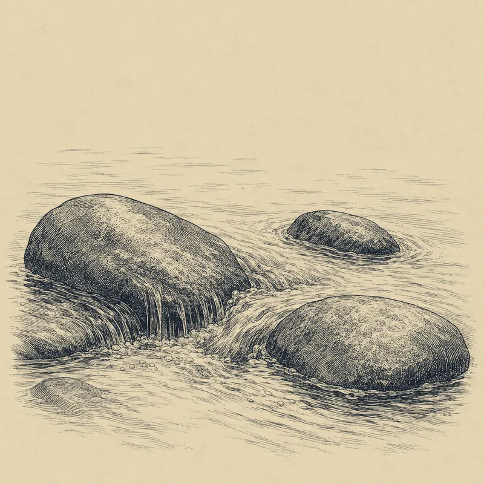
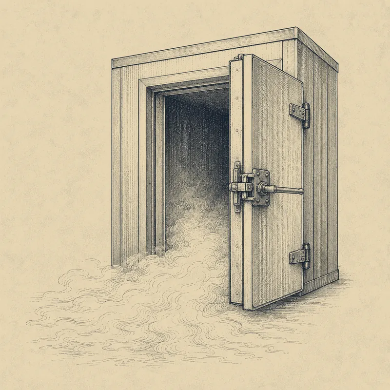
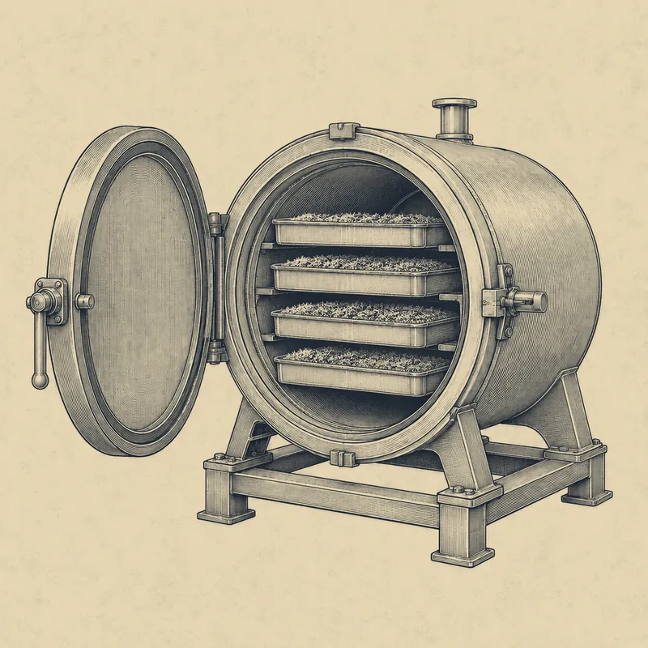
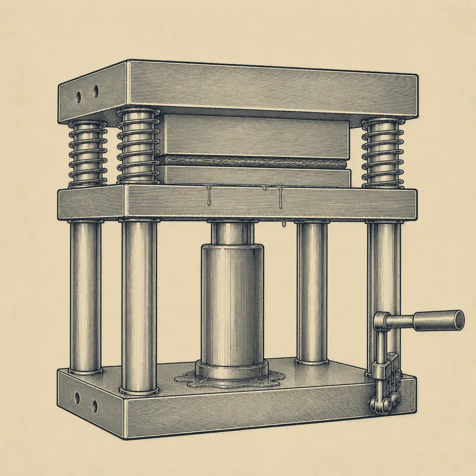

Good hash starts with good flower. We keep it cold, separate the trichome heads carefully, dry them, and press them. There is no later step where you can fix bad starting material.
Three parts. What we make, why it matters, and what to say about it.
Part One is our product.
Who we are, how we make it, and what our lines and tiers actually mean.
Part Two is the category.
Most customers meeting rosin for the first time have no frame of reference. This is the background that makes it make sense.
Part Three is the counter.
Lines that work said out loud, the six questions you will actually get, and the things we never claim.
Everything in here is written to be said out loud. If a customer asks something this guide does not answer, say you will find out. That answer is always better than a guess, and the contact details are at the bottom.
Who we are
We grow First Water here. Every Adirondack Cold Water batch is washed, pressed, and jarred here.
We are a licensed New York cultivator, processor, and distributor.
Outcast Acres started as a hemp farm and grew into all three. Our cultivator license was one of the very first issued in New York’s first round of adult-use conditional cultivator (AUCC) licenses, in 2022.
Nothing is outsourced. Nothing is bought in finished.
We wash, press, jar, and deliver every batch ourselves. We own the process, so if there is a problem it comes back to us.
Adirondack Cold Water is our solventless live rosin.
The name is ours. The farm is in Granville, in the North Country, and that is what goes on the label.
Every batch is third-party tested.
In accordance with OCM guidelines, before it leaves the farm. The COA for the jar in your hand is the one that counts.
Granville is in Washington County, outside the Adirondack Park. Adirondack Cold Water is a brand name, not a claim about where the flower was grown. Say Granville, New York, or the North Country. Never say grown in the Adirondacks or crafted in the Adirondacks.
How we make it
Six steps. It can be described in six steps because there is nothing hidden in it.
We freeze the flower the day it comes down.
Every hour it sits warm is aroma leaving permanently.

Click here to Learn More
Flower is harvested at peak ripeness and frozen immediately. Terpenes are volatile, meaning they evaporate readily at room temperature without needing much heat at all. That is why you can smell a jar of cannabis from across the room: what you are smelling is terpenes leaving the plant and entering the air. Freezing stops that loss and holds onto the lighter, more fragile compounds that a long dry and cure would drive off.
Ice water and a paddle. That is the whole extraction.
Cold makes the resin heads brittle enough to snap off cleanly. The water only carries them.
Click here to Learn More
The frozen material is agitated in ice water, by hand, with a paddle. Cold makes the trichome heads brittle so that gentle agitation snaps them off the plant. Water is only the transport medium. Resin is not soluble in water, so the heads do not dissolve, they detach and get carried through the system. That is the opposite of a chemical extraction, where a solvent dissolves the target compounds and then has to be evaporated back out.
Everything gets sorted by size.
Debris up top, resin in the middle, fine contaminants straight through the bottom.
Click here to Learn More
What comes out of the wash vessel is a slurry, meaning solids suspended in liquid rather than dissolved in it: loose trichome heads, plant fragments, and ice water all moving together. The slurry runs through a stacked series of mesh bags of decreasing size. Sizing the screens is how you separate resin from everything it was floating alongside.
The ice leaves without melting.
Under vacuum, the ice goes straight to vapor, so the hash dries without a warm liquid phase.

Click here to Learn More
Wet hash is dried in a freeze dryer under vacuum. Frozen water sublimates, meaning it converts directly from ice into vapor without passing through a liquid stage. Skipping that stage matters, because heat and moisture are exactly what degrade terpenes and allow microbial growth. Removing water this way protects the aroma and keeps the product stable.
Heat and pressure, and nothing else.
This is the only point in the entire process where we deliberately apply heat.

Click here to Learn More
The dried hash is pressed between heated plates. The resin liquefies and flows out. That is the finished rosin.
What happens after the press decides the texture.
Two finishes, same material. The choice is made after the resin is already made.
Fresh press
Jarred straight off the press, still translucent and sappy. It is the most immediate expression of the material, and it is where the flavor sits brightest.
Cold cure
Held cold for a set period after pressing. The fats, waxes, and terpene fractions come together into an opaque batter. Rounder aroma, easier to handle, and more stable on the shelf.
Cloudy is the cure working.
Customers see opacity and assume something is wrong with it. Nothing is. Cold cure turns clear rosin into an opaque batter, and that change is the whole point of curing it.
Why the flower matters
There is no step where rosin gets fixed. Whatever went in is what comes out.
Nothing can be added and nothing can be removed.
A solventless process only concentrates what the plant already made. That makes the starting material the entire product.
Click here to Learn More
There is no refining step, no distillation, no way to strip out what you do not want or add back what you lost. Rosin preserves a broad native profile of cannabinoids and aromatic compounds, because we separate and press the resin rather than distilling it.
Rosin takes a mechanical route.
We separate the resin with ice water, dry it, and press it. There is no distillation step, and we do not formulate the finished product with added terpenes.
Click here to Learn More
Other concentrates are made by different routes, including distillation followed by reformulation. Those are real products with real uses. If a customer wants a comparison, explain the two processing routes and let them decide what matters to them.
Bad input cannot hide in rosin.
There is no later step where poor starting material gets corrected, so the flower going in sets the ceiling.
How we grow
Two environments, both on our own farm. They are different, not better and worse.
Protected culture is about control.
A wash cannot correct anything, so the cleanest input we have is the one grown where we control the most.
Click here to Learn More
Greenhouse and mixed light. Growing under protection means lower pest and mold pressure, no field contamination, and a stable environment right through the finish. Every batch of ours that reaches Private Reserve comes from protected culture.
Outdoor is about exposure.
Full sun, full season, full natural spectrum, and a plant that responds to all of it.
Click here to Learn More
Sunlight delivers a complete spectrum at intensities no cultivation light reproduces. An outdoor plant is exposed continuously to light, wind, temperature swing, soil biology, and pest pressure, and different environments can produce different expressions. It is also the lower impact way to grow, since the primary energy input is the sun.
Two growing environments with different strengths, not a good one and a bad one. Protected culture gives control and the cleanest input. Outdoor gives full spectrum exposure and complex expression. Our tier ladder reflects how a specific batch graded at the bench, not a verdict on either method. Describe the environments, describe the process, and let the customer decide.
Lines
The line tells you where it came from. That is all it tells you.
First Water is ours end to end.
Single cultivar, grown on our farm, washed and pressed by us. One source in the jar.
Base Camp is partner farms, plus every blend.
Same process, same standards, same testing. Different source.
Every blend lives in Base Camp, no exceptions.
This is the one people get wrong. Guide’s Blend is made entirely from our own farm material and it still sits in Base Camp, because every blend does.
Lanes, not a ranking. Line tells you the source. Tier tells you the grade.
Tiers
Tier is a grade, and it is earned one batch at a time.
Tier is assigned to a batch, not to a cut. The same cut can grade differently from one run to the next, because every run is different. Tier is not a THC ranking and it is not a terpene ranking. A Tier 2 jar can test higher than a Private Reserve jar on either number, and that is normal.
Grading happens at the bench, on what the resin does.
How completely it melts, its color, and the condition of the trichome heads. Not what the lab says.
Two separate systems. Source lanes: First Water is a single cultivar grown on our own farm; Base Camp is partner farm single cultivars. Material from either lane becomes a batch, a single run of material. Every batch goes through bench grading on melt, color, and head condition, which assigns one of three badges: Private Reserve, Tier 1, or Tier 2. Blends split off from the Base Camp lane before grading and carry no tier at all. Private Reserve requires protected culture growing, and both lanes can reach it. Outdoor material tops out at Tier 1. Tier is assigned to the batch, not the cut, and it is not a potency ranking.
The ladder is a genuine hierarchy of how the resin performed at the bench. It is not a potency ranking.
Tier is assigned to the batch, not the cut. The same cut can grade differently on different runs.
Private Reserve has to be grown under protection.
That is a requirement, not a guarantee. Plenty of protected culture material grades into Tier 1 or Tier 2 instead.
Click here to Learn More
Greenhouse, mixed light, or indoor. A batch still has to earn it at the bench on melt, color, and head condition. Private Reserve appears in both lines: a partner farm growing under protection can produce a Base Camp Private Reserve.
Tier 1 is the cleanest selection off a run.
The cleanest selection off an outdoor run, or protected culture material that graded below Private Reserve. Outdoor tops out here.
Tier 2 is real solventless at an everyday price.
Same farm, same wash, same standards, same testing. It is how somebody finds out what rosin tastes like without paying a premium first.
Click here to Learn More
Tier 2 is not leftover material and it is not a second thought. It earns its shelf space on its own. Sell it as what it is rather than as what it is not.
Blends do not carry a tier.
A blend is built to a profile rather than graded against one, so there is no badge on it.
Customers will ask which strain sits behind a cut name. That is not something we share. Sell the cut name and the profile. And do not describe a flavor unless approved copy exists for that cut. If none exists, describe the line and the process instead. Never improvise a tasting note.
Reading a jar
There is a lot of folklore here and most of it is wrong.
Color is a hint, not a verdict.
Lighter usually means fresher material and a clean wash. It is not cannabinoid content, and darker does not mean contaminated.
Cloudy is texture, not purity.
Fresh press is translucent because it has not been cured. Cold cure is opaque because it has. An opaque jar is not a dirty jar.
Melt, aroma, and the COA. In that order.
That is what an experienced buyer is actually reading, and none of it is visible from across the counter.
Terms customers will use
Know these so you are not caught out.
- Hash
- Ice water hash. The separated, dried trichome heads before pressing. A finished product in its own right, not only an input.
- Full melt
- Hash of the highest melt grade, vaporizing almost completely with little residue. A grade of hash, not a type of rosin.
- Live rosin
- Rosin pressed from hash made from fresh frozen material. Live refers to the input, not the press.
- Fresh press
- Rosin jarred straight off the press. Translucent, sappy, brightest flavor.
- Cold cure
- Rosin held cold after pressing until it comes together. Opaque, batter texture, rounder aroma, more stable.
- Badder or batter
- Common names for the texture a cold cure produces.
- Jam
- A loose, glossy consistency.
- Piattella
- A cold cured hash format, pressed into a plate rather than pressed into rosin.
If a customer asks for a format that is not on the shelf, say we release regularly and you will let them know when there is something to show. Do not name or promise a product that has not launched.
What solventless means
Ice, water, heat, and pressure. That is the entire list of inputs.
No solvent touches the material at any point.
No butane, no propane, no ethanol, no CO2. What ends up in the jar is the resin gland itself.
Click here to Learn More
The trichome head that grew on the plant, separated mechanically and pressed into oil. Nothing is added and nothing is distilled out.
There is nothing to purge, because nothing was introduced.
Solvent based concentrates get tested for residual solvent because trace amounts can survive into the finished oil. That test category does not apply here.
Trichomes
Everything a customer is paying for sits in structures they can barely see.
The chemistry lives in the trichome, not in the plant.
That is the entire reason washing works. You are removing the part that holds what you want and leaving the rest behind.
A trichome head is built a bit like a grape.
An outer membrane, with the cannabinoids and terpenes on the inside.
They are 50 to 100 microns across, about the width of a hair.
A jar of rosin is millions of them, separated one wash at a time.
Resin may be part of how the plant handles sunlight.
One leading explanation is that it helps protect the plant from UV, which would account for why it concentrates on the surfaces most exposed to light.
Terpenes
Everything we love about the smell is a defense mechanism that predates us by thousands of years.
Terpenes are how the plant defends itself.
Not sugars and proteins for daily survival, but chemistry aimed at UV, insects, fungus, and anything trying to eat it.
Click here to Learn More
A primary metabolite is something a plant makes to live day to day. A secondary metabolite is something it makes to defend itself. Cannabinoids and terpenes are secondary metabolites, and the trichome is where that defense is manufactured and stored.
Plants were doing this long before anyone cultivated them.
Repelling insects, deterring fungal attack, and in some cases attracting the predators of their own pests.
They are not unique to cannabis.
Limonene is why citrus peel smells like citrus. Pinene is why a pine forest smells like pine. Linalool is the main aromatic compound in lavender.
Click here to Learn More
Cannabis just produces an unusually complex mix of them.
Cannabis makes over a hundred cannabinoids and hundreds of aromatic compounds.
Rosin carries a broad range of them through to the jar, because nothing is distilled out along the way.
THCA and THC
The plant primarily makes THCA. Heat converts it to THC.
THCA is the acid form the plant produces.
It is not decarboxylated, so it does not cross the blood brain barrier the way THC does.
Heat converts THCA into THC.
Smoking or dabbing does it in real time, because the material is being heated as it is consumed.
That is why a COA lists both.
Total THC estimates the potential THC after decarboxylation. It is a lab calculation, not a prediction of how somebody will feel.
The entourage effect
A theory, and worth stating as one.
The working theory is that these compounds act together, not alone.
The character of a cultivar comes from the whole mixture rather than from THC by itself.
Click here to Learn More
Cannabinoids, terpenes, and flavonoids interacting with one another. It remains an area of active research rather than settled science, and it should be described that way.
What we can say is what is preserved.
Rosin carries a broader mix of the compounds present in the starting material. Whether those compounds interact in a predictable entourage effect is still being studied.
Reading a COA
Every jar has one behind it, and the numbers change with every run.
Total terpenes is the number worth showing.
Most menu tags display THC and nothing else. Terpenes are where rosin distinguishes itself, and plenty of point of sale systems have the field and leave it blank.
Click here to Learn More
Ask your manager to populate it. It gives the customer another batch-specific number besides THC.
THC is not how we grade it.
Tier comes from what the resin does at the bench: melt, color, and head condition. Numbers vary batch to batch.
Never quote a number you have not checked.
Read the COA for the lot actually on the shelf, not one from memory or a sales sheet. Our published certificates are at adirondackcoldwater.com/coa, searchable by batch code.
Handling and storage
What the customer paid for is the part that escapes easiest.
Store it cold.
Rosin is terpene-rich and temperature-sensitive. Refrigeration is what keeps the aroma in the jar.
Click here to Learn More
Terpenes are volatile, so warmth and time work against them. Once they are gone they cannot be added back, and what the customer paid for is partly that aroma.
Dab it lower than they are used to.
Roughly 450 to 500 degrees Fahrenheit. Running hot burns the terpenes off before they are ever tasted.
Clean tool, closed jar.
Air and warmth are what cost the customer the thing they paid for.
Talking points
Lead with the process, not with superlatives. These are written to be said as written.
This is made with ice water, heat, and pressure. No chemical solvents at any stage. There is nothing added and nothing to purge out.
Most oil on the shelf is distilled down toward pure THC, which takes the flavor out with everything else, so terpenes get blended back in afterward. Rosin never had anything taken out, so what you taste is the actual plant. There is a theory called the entourage effect, that the cannabinoids and terpenes work together in the ratios the plant grew them in. Pull them apart and rebuild it and you do not get the same thing back.
Rosin cannot be fixed after the fact, so it can only be as good as the flower that went into it. This came off the farm that made it.
If you already know flower, rosin is the resin off fresh frozen flower, separated with ice water and pressed. It is a concentrate, but the point is the process and the plant profile, not chasing a bigger number.
First Water is grown, washed, pressed, and jarred by us in Granville. Base Camp starts with partner farm material or a blend, then comes through the same wash, press, jar, and testing here.
If a customer asks
Six questions you will get, and what to say.
What is the difference between First Water and Base Camp?
First Water is single cultivar from the farm that makes it. Base Camp is partner farm material and all of the blends. Same process and same standards, different source. It is not a ranking.
What does Private Reserve mean?
It is a grade assigned to that specific batch based on how the resin performs at the bench, and it only comes from protected culture growing. It is not a THC ranking.
Why is the THC lower than the jar next to it?
THC is not how we grade it. Tier comes from what the resin does at the bench: melt, color, and head condition. Numbers vary batch to batch, so use the COA for the jar actually on the shelf, and look at total terpenes alongside THC.
Why is this one cloudy and that one clear?
That is the finish, not the quality. Clear and sappy is fresh press, jarred straight off the press. Cloudy is cold cure, held cold after pressing until it comes together into a batter. Different texture, different aroma character, same material.
What strain is it really?
That is not something the farm shares. The cut name is the name.
Is this better than the solvent concentrates?
Describe the difference rather than ranking them. It is made without solvents and without added terpenes, so nothing is purged out and nothing is blended in. Let the customer decide what matters to them.
What not to say
New York treats brand education as advertising. No health claims. Do not promote potency. Do not invent tasting notes, lab numbers, origins, or product claims. If it is batch-specific, check the label or the COA before you say it.
- No health, medical, therapeutic, or curative claims of any kind. That includes anxiety, sleep, pain, and wellness.
- Do not say rosin is healthier or better for you. Describe the process and let the customer draw the conclusion.
- No comparative potency or quality claims that are not supported by the COA for that batch.
- Do not claim or imply that any cannabis product is approved, endorsed, or certified by a government body.
- Do not say the product is grown or crafted in the Adirondacks. Granville, New York is the accurate claim.
- Do not claim first, only, best, or finest about anything.
- Do not say which cultivar sits behind a cut name.
- Do not describe a flavor for a cut without approved copy.
- Do not quote a lab number without checking the COA for that lot.
- Do not name or promise a product that has not launched.
Stick to what the COA and the label state: cannabinoid content, terpene content, batch and license information, and testing status.
Anything about a specific batch, cultivar, or COA comes straight to us.
Outcast Acres Farm LLC, Granville, NY 12832. Processor OCM‑PROC‑25‑000317. Distributor OCM‑DIST‑24‑000060. For adults 21 and over. Training material for licensed retail staff.